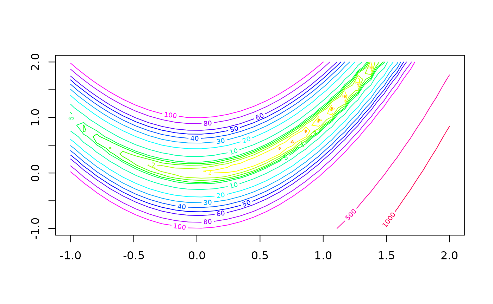

vignettes/getting-started.Rmd
getting-started.RmdRyacas makes the yacas computer algebra system available from within R. The name yacas is short for “Yet Another Computer Algebra System”. The yacas program is developed by Ayal Pinkhuis and others, and is available at http://www.yacas.org/ for various platforms. There is a comprehensive documentation (300+ pages) of yacas available at https://yacas.readthedocs.io and the documentation contains many examples.
This version of Ryacas is somewhat different to previous versions of Ryacas because we have tried to make the interface a lot simpler.
The old version of Ryacas is available as a legacy version called Ryacas0 at https://github.com/r-cas/ryacas0/ with documentation directly available at https://r-cas.github.io/ryacas0/.
yacas
The naming principle governing Ryacas functions is as follows:
yac_*(x) functions evaluate/run yacas command x; the result varies depending on which of the functions used (see below)y_*(x) various utility functions (not involving calls to yacas)There are two interfaces to yacas: a low-level (see the “The low-level interface” vignette) and a high-level (see the “The high-level (symbol) interface” vignette). The low-level is highly customisable, but also requires more work with text strings. The high-level is easier dealing with vectors and matrices, but may also be less computationally efficient and less flexible.
Below, we will demonstrate both interfaces and refer to the other vignettes for more information.
A short summary of often-used yacas commands are found at the end of this vignette. A short summary of often-used low-level Ryacas functions are found at the end of the “The low-level interface” vignette, and a short summary of often-used high-level Ryacas functions are found at the end of the “The high-level (symbol) interface” vignette.
The low-level interface consists of these two main functions:
yac_str(x): Evaluate yacas command x (a string) and get result as string/character.yac_expr(x): Evaluate yacas command x (a string) and get result as an R expression.Note, that the yacas command x is a string and must often be built op using paste()/paste0(). Examples of this will be shown in multiple examples below.
eq <- "x^2 + 4 + 2*x + 2*x"
yac_str(eq) # No task was given to yacas, so we simply get the same returned## [1] "x^2+2*x+2*x+4"## [1] "x^2+4*x+4"## [1] "(x+2)^2"## expression((x + 2)^2)## [1] "\\left( x + 2\\right) ^{2}"Instead of the pattern paste0("Simplify(", eq, ")") etc., there exists a helper function y_fn() that does this:
## [1] "Factor(x^2 + 4 + 2*x + 2*x)"## [1] "(x+2)^2"## [1] "\\left( x + 2\\right) ^{2}"As you see, there are a lot of nested function calls. That can be avoided by using magrittr’s pipe %>% (automatically available with Ryacas) together with the helper function y_fn():
## [1] "Factor(x^2 + 4 + 2*x + 2*x)"## [1] "(x+2)^2"## [1] "\\left( x + 2\\right) ^{2}"The polynomial can be evaluated for a value of \(x\) by calling yac_expr() instead of yac_str():
## [1] "(x+2)^2"## expression((x + 2)^2)## [1] 16The high-level interface consists of the main function ysym() and often the helper function as_r() will be used to get back an R object (expression, matrix, vector, …).
Before we had eq as a text string. We now make a ysym() from that:
## y: x^2+2*x+2*x+4## expression(x^2 + 2 * x + 2 * x + 4)## y: (x+2)^2Notice how the printing is different from before.
We start with a small matrix example:
## {{ 1, -2, -3, -4},
## { 0, 2, -2, -3},
## { 1, 0, 3, -2},
## { 2, 1, 0, 4}}## {1, 2, 3, 4}Notice how they are printed using yacas’s syntax.
We can apply yacas functions using y_fn():
## {{ 1, 0, 1, 2},
## {-2, 2, 0, 1},
## {-3, -2, 3, 0},
## {-4, -3, -2, 4}}## {{ 37/202, 3/101, 41/202, 31/101},
## {(-17)/101, 30/101, 3/101, 7/101},
## {(-19)/202, (-7)/101, 39/202, (-5)/101},
## { (-5)/101, (-9)/101, (-11)/101, 8/101}}## y: 10Some standard R commands are available (see the section “Ryacas high-level reference” at the end of the “The high-level (symbol) interface” vignette):
## [,1]
## [1,] -28
## [2,] -14
## [3,] 2
## [4,] 20## {-28, -14, 2, 20}## [,1] [,2] [,3] [,4]
## [1,] 1 0 1 2
## [2,] -2 2 0 1
## [3,] -3 -2 3 0
## [4,] -4 -3 -2 4## {{ 1, 0, 1, 2},
## {-2, 2, 0, 1},
## {-3, -2, 3, 0},
## {-4, -3, -2, 4}}## [,1] [,2]
## [1,] -2 -3
## [2,] 2 -2
## [3,] 0 3
## [4,] 1 0## {{-2, -3},
## { 2, -2},
## { 0, 3},
## { 1, 0}}## [,1] [,2] [,3] [,4]
## [1,] 1.000000e+00 0.000000e+00 -5.551115e-17 -5.551115e-17
## [2,] 2.775558e-17 1.000000e+00 -5.551115e-17 1.110223e-16
## [3,] 2.775558e-17 5.551115e-17 1.000000e+00 -1.110223e-16
## [4,] 0.000000e+00 0.000000e+00 0.000000e+00 1.000000e+00## {{1, 0, 0, 0},
## {0, 1, 0, 0},
## {0, 0, 1, 0},
## {0, 0, 0, 1}}Next we will demonstrate matrix functionality using the Hilbert matrix \[
H_{{ij}}={\frac{1}{i+j-1}}
\] In R’s solve() help file there is code for generating it:
To avoid floating-point issues (see the “Arbitrary-precision arithmetic” vignette), we instead generate just the denominators as a stanard R matrix:
hilbert_den <- function(n) {
i <- 1:n
H <- outer(i - 1, i, "+")
return(H)
}
Hden <- hilbert_den(4)
Hden## [,1] [,2] [,3] [,4]
## [1,] 1 2 3 4
## [2,] 2 3 4 5
## [3,] 3 4 5 6
## [4,] 4 5 6 7## [,1] [,2] [,3] [,4]
## [1,] 1.0000000 0.5000000 0.3333333 0.2500000
## [2,] 0.5000000 0.3333333 0.2500000 0.2000000
## [3,] 0.3333333 0.2500000 0.2000000 0.1666667
## [4,] 0.2500000 0.2000000 0.1666667 0.1428571To use Ryacas’s high-level interface, we use the function ysym() that converts the matrix to yacas representation and automatically calls yac_str() when needed. Furthermore, it enables standard R functions such as subsetting with [, diag(), dim() and others.
## {{1, 2, 3, 4},
## {2, 3, 4, 5},
## {3, 4, 5, 6},
## {4, 5, 6, 7}}## {{ 1, 1/2, 1/3, 1/4},
## {1/2, 1/3, 1/4, 1/5},
## {1/3, 1/4, 1/5, 1/6},
## {1/4, 1/5, 1/6, 1/7}}Notice how the printing is different from R’s printing.
We can then to a number of things with the ysym().
## [,1] [,2] [,3] [,4]
## [1,] 1.0000000 0.5000000 0.3333333 0.2500000
## [2,] 0.5000000 0.3333333 0.2500000 0.2000000
## [3,] 0.3333333 0.2500000 0.2000000 0.1666667
## [4,] 0.2500000 0.2000000 0.1666667 0.1428571## {1, 1/3, 1/5, 1/7}## {1/2, 1/3, 1/4, 1/4, 1/5, 1/6}## {{ 1, 1/2, 1/3, 1/4},
## {1/2, 1/3, 1/4, 1/5}}## [1] 4 4## {{ 1, 1/2, 1/3, 1/4},
## { x, 1/3, 1/4, 1/5},
## { x, x, 1/5, 1/6},
## { x, x, x, 1/7}}## expression(rbind(c(1, 1/2, 1/3, 1/4), c(x, 1/3, 1/4, 1/5), c(x,
## x, 1/5, 1/6), c(x, x, x, 1/7)))## [,1] [,2] [,3] [,4]
## [1,] 1 0.5000000 0.3333333 0.2500000
## [2,] 999 0.3333333 0.2500000 0.2000000
## [3,] 999 999.0000000 0.2000000 0.1666667
## [4,] 999 999.0000000 999.0000000 0.1428571We consider the Rosenbrock function:
## y: (1-x)^2+100*(y-x^2)^2## [1] "\\left( 1 - x\\right) ^{2} + 100 \\left( y - x ^{2}\\right) ^{2}"\[\begin{align}f(x, y) = \left( 1 - x\right) ^{2} + 100 \left( y - x ^{2}\right) ^{2}\end{align}\]
We can visualise this, too.
## expression((1 - x)^2 + 100 * (y - x^2)^2)z <- outer(x, y, function(x, y) eval(f_r, list(x = x, y = y)))
levels <- c(0.001, .1, .3, 1:5, 10, 20, 30, 40, 50, 60, 80, 100, 500, 1000)
cols <- rainbow(length(levels))
contour(x, y, z, levels = levels, col = cols)
Say we want to find the minimum. We do that by finding the roots of the gradient:
## {(-2)*(1-x)-400*x*(y-x^2), 200*(y-x^2)}\[\begin{align}g(x, y) = \left( -2 \left( 1 - x\right) - 400 x \left( y - x ^{2}\right) , 200 \left( y - x ^{2}\right) \right)\end{align}\]
## {{x==1, y==1}}## {1, 1}## [1] 1 1We now verify what type of critical point we have by inspecting the Hessian at that critical point:
## {{2-400*(y-x^2-2*x^2), (-400)*x},
## { -400*x, 200}}## [1] "\\left( \\begin{array}{cc} 2 - 400 \\left( y - x ^{2} - 2 x ^{2}\\right) & -400 x \\\\ - 400 x & 200 \\end{array} \\right)"\[\begin{align} H = \left( \begin{array}{cc} 2 - 400 \left( y - x ^{2} - 2 x ^{2}\right) & -400 x \\ - 400 x & 200 \end{array} \right) \end{align}\]
## [,1] [,2]
## [1,] 802 -400
## [2,] -400 200## [1] 1001.6006392 0.3993608Because the Hessian is positive definite, the critical point \((1, 1)\) is indeed a minimum (actually, the global minimum).
yacas referenceBelow are some yacas functions. A more elaborate reference is available at https://yacas.readthedocs.io/:
Expand(x): Expand an expressionFactor(x): Factorise an expressionSimplify(x): Simplify an expressionSolve(expr, var) solve an equation (refer to the Ryacas function y_rmvars())Variables(): List yacas variablesD(x) expr: Take the derivative of expr with respect to x
HessianMatrix(function, var): Create the Hessian matrixJacobianMatrix(function, var): Create the Jacobian matrixLimit(n, a) f(n): Limit of f(n) for n going towards a (e.g. Infinity or 0)Sum(k, a, b, f(k)): Sum of f(k) for k from a to b.TeXForm(x): Get a \(\LaTeX\) representation of an expressionPrettyForm(x): Print a prettier ASCII representation of an expressionInverse(A): Inverse of a matrixTranspose(A): Transpose of a matrixA * B: Matrix multiplication (and not as R’s %*%)